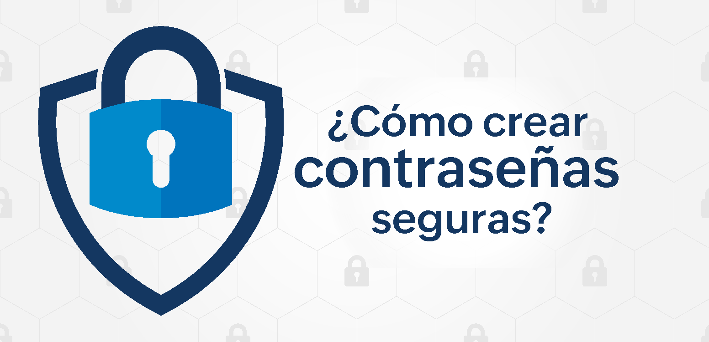

¿Cómo crear contraseñas seguras para tu empresa en 2025?
Publicado el 6 de Junio de 2025 por Balter Velázquez
Las contraseñas débiles continúan siendo uno de los puntos más vulnerables en la seguridad cibernética de las empresas. En 2025, con el aumento de las amenazas sofisticadas, es más crítico que nunca implementar estrategias robustas para la creación y gestión de contraseñas.
La Importancia de una Contraseña Fuerte
Una contraseña fuerte es la primera línea de defensa contra accesos no autorizados. No solo protege datos sensibles, sino que también salvaguarda la reputación y la continuidad del negocio.
Características de una Contraseña Segura:
- Longitud: Idealmente, más de 12-16 caracteres.
- Variedad de Caracteres: Combinación de mayúsculas, minúsculas, números y símbolos.
- Aleatoriedad: Evita palabras de diccionario, fechas de cumpleaños o información personal.
- Unicidad: Cada cuenta debe tener una contraseña diferente.
Herramientas de Generación de Contraseñas
Utilizar un generador de contraseñas como BusinessPass es fundamental para crear combinaciones verdaderamente aleatorias y complejas. Estas herramientas eliminan la falibilidad humana y garantizan que las contraseñas cumplan con los estándares de seguridad más altos.
Consejos Adicionales:
- Autenticación de Dos Factores (2FA): Implementa 2FA en todas las cuentas posibles.
- Gestores de Contraseñas: Anima a tu equipo a usar gestores de contraseñas confiables.
- Educación y Concienciación: Capacita regularmente a tus empleados sobre las mejores prácticas de seguridad.
- Auditorías Regulares: Revisa y actualiza tus políticas de contraseñas periódicamente.
Al adoptar estas prácticas, tu empresa estará mucho mejor protegida contra las amenazas cibernéticas en 2025.